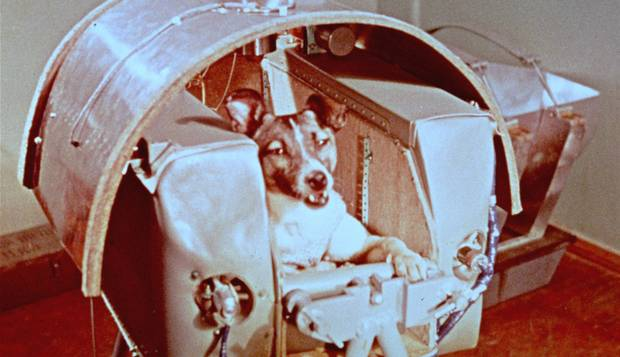
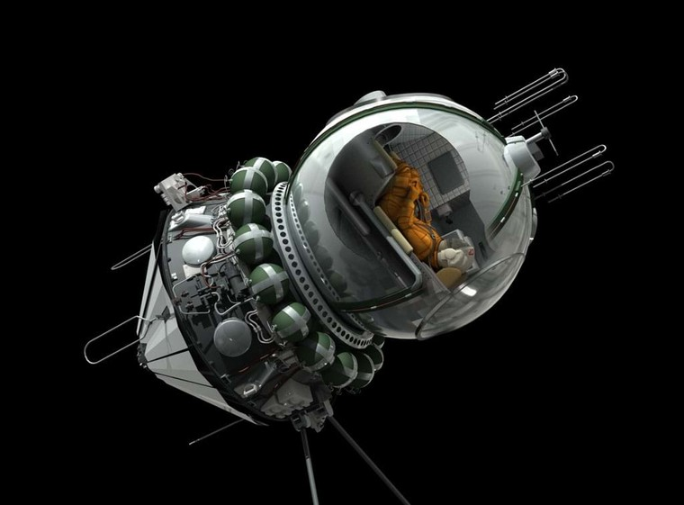
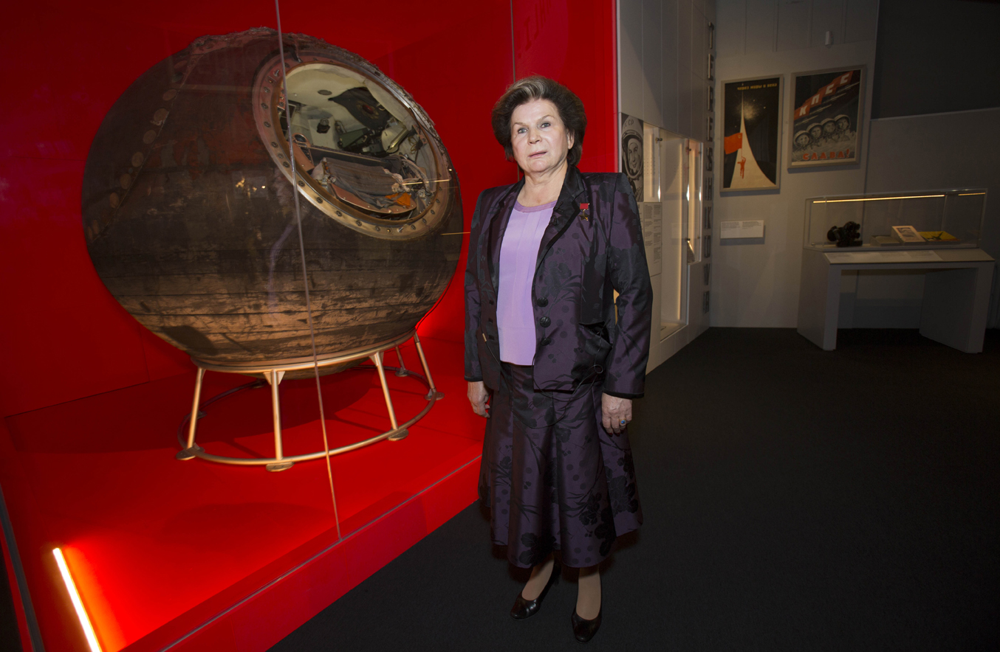
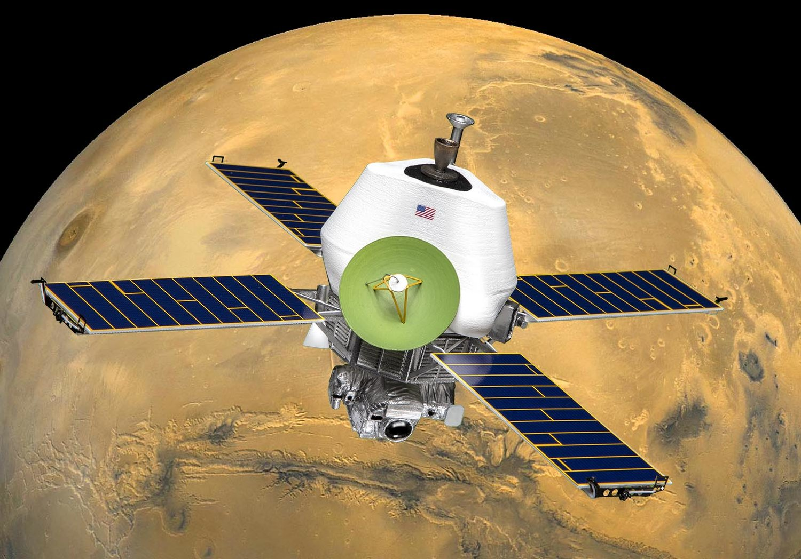
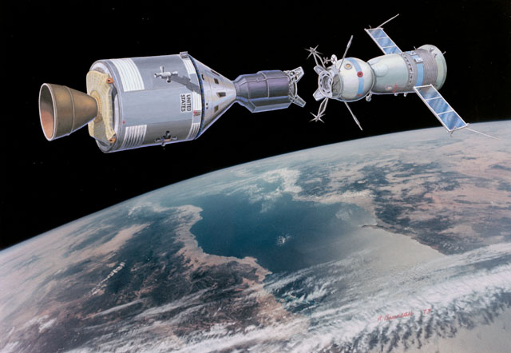
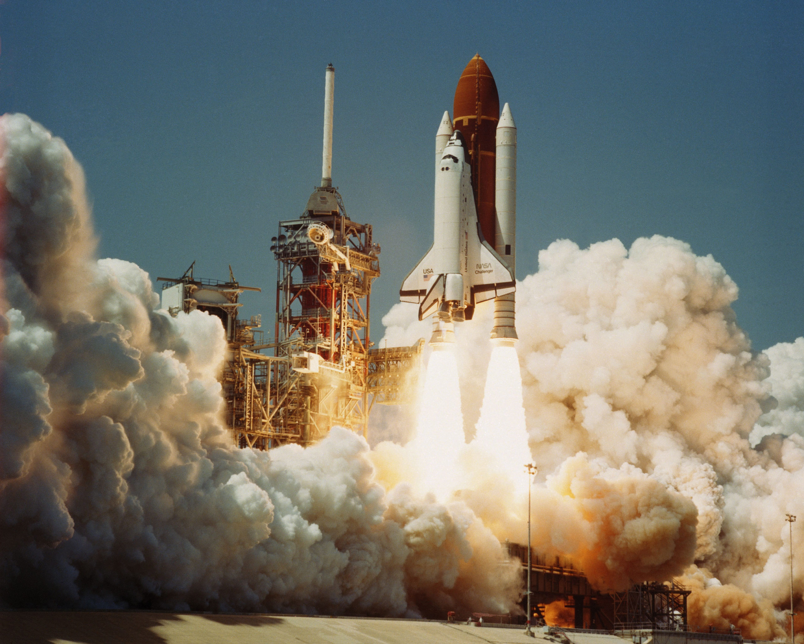
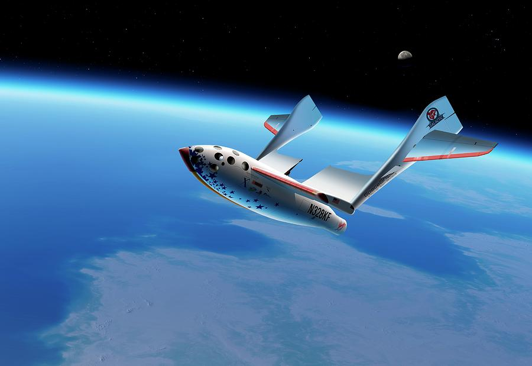
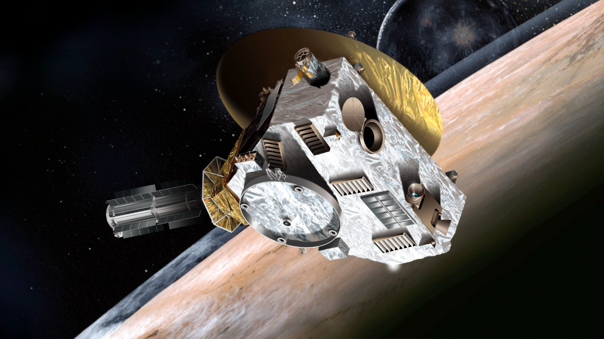

O Sputnik 1, primeiro foguete no espaço, lançado pela União Soviética.
Outubro de 1957

O Sputnik 2 foi o primeiro foguete a levar um ser vivo ao espaço, a cadela Laika.
Novembro de 1957

A Vostok 1 é lançada pela União Soviética com o cosmonauta Yuri Gagarin, o primeiro homem no espaço. Ele orbita a Terra uma vez.
Abril de 1961

Valentina Tereshkova foi a primeira mulher a ir ao espaço na missão Vostok 6.
Junho de 1963
A Apollo 11 foi a missão que levou Neil Armstrong à Lua, o primeiro homem a pisar nela, lançada pela NASA nos EUA.
Julho de 1969

A Mariner 9, dos Estados Unidos, torna-se a primeira nave a orbitar outro planeta (Marte).
Novembro de 1971

A Apollo 18 americana e a Soyuz 19 soviética juntam-se em pleno espaço (e em plena Guerra Fria), na primeira ligação internacional entre naves espaciais.
Julho de 1975

A Pioneer 11 americana chega à atmosfera de Saturno, obtendo as primeiras imagens detalhadas do planeta.
Setembro de 1979

Primeiro voo espacial privado, realizado pela nave SpaceShipOne - uma nave espacial experimental da empresa Scaled Composites.
Junho de 2004

A sonda New Horizons foi a primeira a sobrevoar Plutão em 2015, revelando novos detalhes sobre o planeta anão, o mais distante que algum objeto humano chegou até o momento.